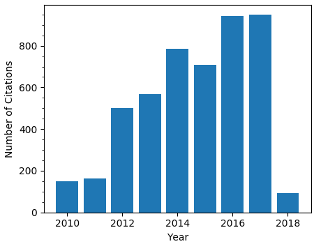
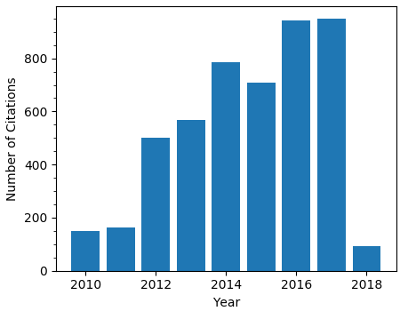

Publication Statistics

All information was updated on 11 June 2018
Matthew Smith's Personal Webpage
Publication Statistics

All information was updated on 11 June 2018
The Herschel-Atlas data release 2 paper 1: submillimetre and far-infrared images of the south and north galactic poles - the largest Herschel survey of the extragalactic sky
MWL Smith, E Ibar, SJ Maddox, E Valiante, L Dunne, S Eales, S Dye, ...
Year: 2017
ApJ, 233 (2), 26
Link: http://dx.doi.org/10.3847/1538-4365/aa9b35
Citations: 0
Far-reaching dust distribution in galaxy discs
MWL Smith, SA Eales, I De Looze, M Baes, GJ Bendo, S Bianchi, ...
Year: 2016
MNRAS, 462 (1), 331-344
Link: http://orca.cf.ac.uk/92319/
Citations: 6
The Herschel Exploitation of Local Galaxy Andromeda (HELGA). II. Dust and Gas in Andromeda
MWL Smith, SA Eales, HL Gomez, J Roman-Duval, J Fritz, R Braun, ...
Year: 2012
ApJ, 756 (1), 40
Link: http://dx.doi.org/10.1088/0004-637X/756/1/40
Citations: 109
The Herschel Reference Survey: dust in early-type galaxies and across the Hubble sequence
MWL Smith, HL Gomez, SA Eales, L Ciesla, A Boselli, L Cortese, ...
Year: 2012
ApJ, 748 (2), 123
Link: http://dx.doi.org/10.1088/0004-637X/748/2/123
Citations: 125
The Herschel Virgo Cluster Survey-IV. Resolved dust analysis of spiral galaxies
MWL Smith, C Vlahakis, M Baes, GJ Bendo, S Bianchi, DJ Bomans, ...
Year: 2010
A&A, 518, L51
Link: http://dx.doi.org/10.1051/0004-6361/201014584
Citations: 50
These papers are ones to which I have contributed significant scientific analysis and effort
to the publication.
The Herschel-ATLAS data release 1–I. Maps, catalogues and number counts
E Valiante, MWL Smith, S Eales, SJ Maddox, E Ibar, R Hopwood, ...
Year: 2016
MNRAS, 462 (3), 3146-3179
Link: http://dx.doi.org/10.1093/mnras/stw1806
Citations: 57
Can Dust Emission be Used to Estimate the Mass of the Interstellar Medium in Galaxies—A Pilot Project with the Herschel Reference Survey
S Eales, MWL Smith, R Auld, M Baes, GJ Bendo, S Bianchi, A Boselli, ...
Year: 2012
ApJ, 761 (2), 168
Link: http://dx.doi.org/10.1088/0004-637X/761/2/168
Citations: 43
Can dust emission be used to map the interstellar medium in high-redshift galaxies? Results from the Herschel Reference Survey
S Eales, MWL Smith, R Auld, M Baes, GJ Bendo, S Bianchi, A Boselli, ...
Year: 2012
arXiv, 1202.0547
Link: http://dx.doi.org/10.1088/0004-637X/761/2/168
Citations: 2
Herschel observations of Cen A: stellar heating of two extragalactic dust clouds
R Auld, MWL Smith, G Bendo, M Pohlen, C Wilson, H Gomez, L Cortese, ...
Year: 2012
MNRAS, 420 (3), 1882-1896
Link: http://dx.doi.org/10.1111/j.1365-2966.2011.19819.x
Citations: 23
Mapping the interstellar medium in galaxies with Herschel/SPIRE
SA Eales, MWL Smith, CD Wilson, GJ Bendo, L Cortese, M Pohlen, ...
Year: 2010
A&A, 518, L62
Link: http://dx.doi.org/10.1051/0004-6361/201014536
Citations: 35
The Herschel Virgo Cluster Survey-XX. Dust and gas in the foreground Galactic cirrus
S Bianchi, C Giovanardi, MWL Smith, J Fritz, JI Davies, MP Haynes, ...
Year: 2017
A&A, 597, A130
Link: http://dx.doi.org/10.1051/0004-6361/201629013
Citations: 11
The Galaxy End Sequence
S Eales, P de Vis, M WL Smith, K Appah, L Ciesla, C Duffield, S Schofield
Year: 2016
MNRAS, 465 (3), 3125-3133
Link: http://dx.doi.org/10.1093/mnras/stw2875
Citations: 15
H-ATLAS: the far-infrared properties of galaxies in and around the Coma cluster
C Fuller, JI Davies, MWL Smith, E Valiante, S Eales, N Bourne, L Dunne, ...
Year: 2016
MNRAS, 458 (1), 582-602
Link: http://dx.doi.org/10.1093/mnras/stw305
Citations: 2
The Herschel Virgo Cluster Survey–XII. FIR properties of optically selected Virgo cluster galaxies
R Auld, S Bianchi, MWL Smith, JI Davies, GJ Bendo, SA di Serego, ...
Year: 2013
MNRAS, 428 (3), 1880-1910
Link: http://dx.doi.org/10.1093/mnras/sts125
Citations: 62
Herschel Exploitation of Local Galaxy Andromeda (HELGA). III. The Star Formation Law in M31
GP Ford, WK Gear, MWL Smith, SA Eales, M Baes, GJ Bendo, M Boquien, ...
Year: 2013
ApJ, 769 (1), 55
Link: http://dx.doi.org/10.1088/0004-637X/769/1/55
Citations: 51
The Herschel Exploitation of Local Galaxy Andromeda (HELGA)-I. Global far-infrared and sub-mm morphology
J Fritz, G Gentile, MWL Smith, WK Gear, R Braun, JR Duval, GJ Bendo, ...
Year: 2012
A&A, 546, A34
Link: http://dx.doi.org/10.1051/0004-6361/201118619
Citations: 54
Submillimetre photometry of 323 nearby galaxies from the Herschel Reference Survey
L Ciesla, A Boselli, MWL Smith, GJ Bendo, L Cortese, S Eales, S Bianchi, ...
Year: 2012
A&A, 543, A161
Link: http://dx.doi.org/10.1051/0004-6361/201219216
Citations: 84
Radial distribution of gas and dust in spiral galaxies-The case of M 99 (NGC 4254) and M 100 (NGC 4321)
M Pohlen, L Cortese, MWL Smith, SA Eales, A Boselli, GJ Bendo, ...
Year: 2010
A&A, 518, L72
Link: http://dx.doi.org/10.1051/0004-6361/201014554
Citations: 54
The Herschel Bright Sources (HerBS): sample definition and SCUBA-2 observations
TJLC Bakx, SA Eales, M Negrello, MWL Smith, E Valiante, WS Holland, ...
Year: 2017
MNRAS, 473 (2), 1751-1773
Link: http://dx.doi.org/10.1093/mnras/stx2267
Citations: 1
A Dust Twin of Cas A: Cool Dust and Pre-Solar Grain of Silica Revealed in the Supernova Remnant G54. 1+ 0.3
J Rho, HL Gomez, A Boogert, MWL Smith, PO Lagage, D Dowell, ...
Year: 2017
arXiv, 1707.08230
Link: http://arxiv.org/abs/1707.08230
Citations: 0
H-ATLAS/GAMA: quantifying the morphological evolution of the galaxy population using cosmic calorimetry
S Eales, A Fullard, M Allen, MWL Smith, I Baldry, N Bourne, CJR Clark, ...
Year: 2015
MNRAS, 452 (4), 3489-3507
Link: http://dx.doi.org/10.1093/mnras/stv1300
Citations: 7
The Herschel Exploitation of Local Galaxy Andromeda (HELGA). VI. The distribution and properties of molecular cloud associations in M31
JM Kirk, WK Gear, J Fritz, MWL Smith, G Ford, M Baes, GJ Bendo, ...
Year: 2015
ApJ, 798 (1), 58
Link: http://dx.doi.org/10.1088/0004-637X/798/1/58
Citations: 17
The Herschel exploitation of local galaxy Andromeda (HELGA)–V. Strengthening the case for substantial interstellar grain growth
L Mattsson, HL Gomez, AC Andersen, MWL Smith, I De Looze, M Baes, ...
Year: 2014
MNRAS, 444 (1), 797-807
Link: http://dx.doi.org/10.1093/mnras/stu1228
Citations: 22
A resolved analysis of cold dust and gas in the nearby edge-on spiral NGC 891
TM Hughes, M Baes, J Fritz, MWL Smith, TJ Parkin, G Gentile, GJ Bendo, ...
Year: 2014
A&A, 565, A4
Link: http://dx.doi.org/10.1051/0004-6361/201323245
Citations: 34
The Herschel Fornax Cluster Survey II: FIR properties of optically selected Fornax cluster galaxies
C Fuller, JI Davies, R Auld, MWL Smith, M Baes, S Bianchi, M Bocchio, ...
Year: 2014
MNRAS, 440 (2), 1571-1589
Link: http://dx.doi.org/10.1093/mnras/stu369
Citations: 7
HERschel Observations of Edge-on Spirals (HEROES)-I. Far-infrared morphology and dust mass determination
J Verstappen, J Fritz, M Baes, MWL Smith, F Allaert, S Bianchi, ...
Year: 2013
A&A, 556, A54
Link: http://dx.doi.org/10.1051/0004-6361/201220733
Citations: 30
Herschel-ATLAS: correlations between dust and gas in local submm-selected galaxies
N Bourne, L Dunne, GJ Bendo, MWL Smith, CJR Clark, DJB Smith, ...
Year: 2013
MNRAS, 436 (1), 479-502
Link: http://dx.doi.org/10.1093/mnras/stt1584
Citations: 17
The dust morphology of the elliptical Galaxy M 86 with SPIRE
HL Gomez, M Baes, L Cortese, MWL Smith, A Boselli, L Ciesla, GJ Bendo, ...
Year: 2010
A&A, 518, L45
Link: http://dx.doi.org/10.1051/0004-6361/201014530
Citations: 46
ALMA observations of lensed Herschel sources: testing the dark matter halo paradigm
A Amvrosiadis, SA Eales, M Negrello, L Marchetti, MWL Smith, N Bourne, ...
Year: 2018
MNRAS, 475 (4), 4939-4952
Link: http://dx.doi.org/10.1093/mnras/sty138
Citations: 1
Gone with the heat: A fundamental constraint on the imaging of dust and molecular gas in the early Universe
ZY Zhang, PP Papadopoulos, RJ Ivison, M Galametz, MWL Smith, ...
Year: 2016
Royal Society Open Science, 3 (6), 160025
Link: http://dx.doi.org/10.1098/rsos.160025
Citations: 16
The environment and characteristics of low‐redshift galaxies detected by the Herschel‐ATLAS
A Dariush, L Cortese, S Eales, E Pascale, MWL Smith, L Dunne, S Dye, ...
Year: 2011
MNRAS, 418 (1), 64-73
Link: http://dx.doi.org/10.1111/j.1365-2966.2011.19340.x
Citations: 22
DustPedia: Multiwavelength photometry and imagery of 875 nearby galaxies in 42 ultraviolet-microwave bands
CJR Clark, S Verstocken, S Bianchi, J Fritz, S Viaene, MWL Smith, ...
Year: 2018
A&A, 609, A37
Link: http://dx.doi.org/10.1051/0004-6361/201731419
Citations: 3
The Herschel-ATLAS Data Release 2. Paper II. Catalogs of Far-infrared and Submillimeter Sources in the Fields at the South and North Galactic Poles
SJ Maddox, E Valiante, P Cigan, L Dunne, S Eales, MWL Smith, S Dye, ...
Year: 2018
ApJ, 236 (2), 30
Link: http://dx.doi.org/10.3847/1538-4365/aab8fc
Citations: 0
Herschel-ATLAS: the surprising diversity of dust-selected galaxies in the local submillimetre Universe
CJR Clark, L Dunne, HL Gomez, S Maddox, P De Vis, MWL Smith, ...
Year: 2015
MNRAS, 452 (1), 397-430
Link: http://dx.doi.org/10.1093/mnras/stv1276
Citations: 21
The dust scaling relations of the Herschel Reference Survey
L Cortese, L Ciesla, A Boselli, S Bianchi, H Gomez, MWL Smith, ...
Year: 2012
A&A, 540, A52
Link: http://dx.doi.org/10.1051/0004-6361/201118499
Citations: 133
The Herschel Virgo Cluster Survey-IX. Dust-to-gas mass ratio and metallicity gradients in four Virgo spiral galaxies
L Magrini, S Bianchi, E Corbelli, L Cortese, L Hunt, M Smith, C Vlahakis, ...
Year: 2011
A&A, 535, A13
Link: http://dx.doi.org/10.1051/0004-6361/201116872
Citations: 58
The Arecibo Galaxy Environment Survey–IV. The NGC 7448 region and the H i mass function
JI Davies, R Auld, L Burns, R Minchin, E Momjian, S Schneider, M Smith, ...
Year: 2011
MNRAS, 415 (2), 1883-1894
Link: http://dx.doi.org/10.1111/j.1365-2966.2011.18833.x
Citations: 14
These papers are ones to which I have had a less significant role but still contributed to the
publication – for example working on the data products used in the publication, or working on a
specific section of the analysis.
The second Herschel–ATLAS Data Release–III. Optical and near-infrared counterparts in the North Galactic Plane field
C Furlanetto, S Dye, N Bourne, S Maddox, L Dunne, S Eales, E Valiante, ... including M W L Smith
Year: 2018
MNRAS, 476 (1), 961-978
Link: http://dx.doi.org/10.1093/mnras/sty151
Citations: 0
The New Galaxy Evolution Paradigm Revealed by the Herschel Surveys
S Eales, D Smith, N Bourne, J Loveday, K Rowlands, P Werf, S Driver, ... including M W L Smith
Year: 2018
MNRAS,
Link: http://dx.doi.org/10.1093/mnras/stx2548
Citations: 6
A dusty star-forming galaxy at z= 6 revealed by strong gravitational lensing
JA Zavala, A Montaña, DH Hughes, MS Yun, RJ Ivison, E Valiante, ... including M W L Smith
Year: 2018
Nature Astronomy, 2 (1), 56
Link: http://dx.doi.org/10.1038/s41550-017-0297-8
Citations: 4
VALES-II. The physical conditions of interstellar gas in normal star-forming galaxies up to z= 0.2 revealed by ALMA
TM Hughes, E Ibar, V Villanueva, M Aravena, M Baes, N Bourne, ... including M W L Smith
Year: 2017
A&A, 602, A49
Link: http://dx.doi.org/10.1051/0004-6361/201629588
Citations: 3
Radial distribution of dust, stars, gas, and star-formation rate in DustPedia face-on galaxies
V Casasola, LP Cassarà, S Bianchi, S Verstocken, E Xilouris, L Magrini, ... including M W L Smith
Year: 2017
A&A, 605, A18
Link: http://dx.doi.org/10.1051/0004-6361/201731020
Citations: 7
Herschel-ATLAS: Revealing dust build-up and decline across gas, dust and stellar mass selected samples: I. Scaling relations
P De Vis, L Dunne, S Maddox, HL Gomez, CJR Clark, AE Bauer, ... including M W L Smith
Year: 2017
MNRAS, w2501
Link: http://dx.doi.org/10.1093/mnras/stw2501
Citations: 9
The Herschel-ATLAS: a sample of 500 μm-selected lensed galaxies over 600 deg2
M Negrello, S Amber, A Amvrosiadis, ZY Cai, A Lapi, J Gonzalez-Nuevo, ... including M W L Smith
Year: 2017
MNRAS, 465 (3), 3558-3580
Link: http://dx.doi.org/10.1093/mnras/stw2911
Citations: 29
The mean star formation rates of unobscured QSOs: searching for evidence of suppressed or enhanced star formation
F Stanley, DM Alexander, CM Harrison, DJ Rosario, L Wang, JA Aird, ... including M W L Smith
Year: 2017
MNRAS, 472 (2), 2221-2240
Link: http://dx.doi.org/10.1093/mnras/stx2121
Citations: 3
VALES I: the molecular gas content in star-forming dusty H-ATLAS galaxies up to z= 0.35
V Villanueva, E Ibar, TM Hughes, MA Lara-López, L Dunne, S Eales, ... including M W L Smith
Year: 2017
MNRAS, 470 (4), 3775-3805
Link: http://dx.doi.org/10.1093/mnras/stx1338
Citations: 3
The interstellar medium in high-redshift submillimeter galaxies as probed by infrared spectroscopy
JL Wardlow, A Cooray, W Osage, N Bourne, D Clements, H Dannerbauer, ... including M W L Smith
Year: 2017
ApJ, 837 (1), 12
Link: http://dx.doi.org/10.3847/1538-4357/837/1/12
Citations: 3
VALES–III. The calibration between the dust continuum and interstellar gas content of star-forming galaxies
TM Hughes, E Ibar, V Villanueva, M Aravena, M Baes, N Bourne, ... including M W L Smith
Year: 2017
MNRAS, 468 (1), L103-L107
Link: http://dx.doi.org/10.1093/mnrasl/slx033
Citations: 12
Far-infrared emission in luminous quasars accompanied by nuclear outflows
N Maddox, MJ Jarvis, M Banerji, PC Hewett, N Bourne, L Dunne, S Dye, ... including M W L Smith
Year: 2017
MNRAS, 470 (2), 2314-2319
Link: http://dx.doi.org/10.1093/mnras/stx1416
Citations: 1
H-ATLAS/GAMA: magnification bias tomography. Astrophysical constraints above∼ 1 arcmin
J González-Nuevo, A Lapi, L Bonavera, L Danese, G de Zotti, M Negrello, ... including M W L Smith
Year: 2017
Journal of Cosmology and Astroparticle Physics, 2017 (10), 024
Link: http://orca.cf.ac.uk/106111/
Citations: 1
DustPedia: A Definitive Study of Cosmic Dust in the Local Universe
JI Davies, M Baes, S Bianchi, A Jones, S Madden, M Xilouris, M Bocchio, ... including M W L Smith
Year: 2017
PASP, 129 (974), 044102
Link: http://dx.doi.org/10.1088/1538-3873/129/974/044102
Citations: 11
An amplified dusty star-forming galaxy at z= 6: unveiling an elusive population of galaxies
JA Zavala, A Montaña, DH Hughes, MS Yun, RJ Ivison, E Valiante, ... including M W L Smith
Year: 2017
arXiv, 1707.09022
Link: http://arxiv.org/abs/1707.09022
Citations: 0
GAMA/H-ATLAS: The Local Dust Mass Function and Cosmic Density as a Function of Galaxy Type-A Benchmark for Models of Galaxy Evolution
RA Beeston, AH Wright, S Maddox, HL Gomez, L Dunne, SP Driver, ... including M W L Smith
Year: 2017
arXiv, 1712.07261
Link: http://arxiv.org/abs/1712.07261
Citations: 0
The bolometric and UV attenuation in normal spiral galaxies of the Herschel Reference Survey
S Viaene, M Baes, G Bendo, M Boquien, A Boselli, L Ciesla, L Cortese, ... including M W L Smith
Year: 2016
A&A, 586, A13
Link: http://dx.doi.org/10.1051/0004-6361/201527586
Citations: 20
Galaxy And Mass Assembly: accurate panchromatic photometry from optical priors using lambdar
AH Wright, ASG Robotham, N Bourne, SP Driver, L Dunne, SJ Maddox, ... including M W L Smith
Year: 2016
MNRAS, 460 (1), 765-801
Link: http://dx.doi.org/10.1093/mnras/stw832
Citations: 35
GAMA/H-ATLAS: a meta-analysis of SFR indicators–comprehensive measures of the SFR–M* relation and cosmic star formation history at z< 0.4
LJM Davies, SP Driver, ASG Robotham, MW Grootes, CC Popescu, ... including M W L Smith
Year: 2016
MNRAS, 461 (1), 458-485
Link: http://dx.doi.org/10.1093/mnras/stw1342
Citations: 29
The Herschel-ATLAS Data Release 1–II. Multi-wavelength counterparts to submillimetre sources
N Bourne, L Dunne, SJ Maddox, S Dye, C Furlanetto, C Hoyos, DJB Smith, ... including M W L Smith
Year: 2016
MNRAS, 462 (2), 1714-1734
Link: http://dx.doi.org/10.1093/mnras/stw1654
Citations: 34
The interstellar medium in Andromeda's dwarf spheroidal galaxies–I. Content and origin of the interstellar dust
I De Looze, M Baes, GJ Bendo, J Fritz, M Boquien, D Cormier, G Gentile, ... including M W L Smith
Year: 2016
MNRAS, 459 (4), 3900-3916
Link: http://dx.doi.org/10.1093/mnras/stw868
Citations: 6
The Herschel Virgo Cluster Survey-XIX. Physical properties of low luminosity FIR sources at z< 0.5
C Pappalardo, L Bizzocchi, J Fritz, A Boselli, M Boquien, S Boissier, ... including M W L Smith
Year: 2016
A&A, 589, A11
Link: http://dx.doi.org/10.1051/0004-6361/201528008
Citations: 5
The selective effect of environment on the atomic and molecular gas-to-dust ratio of nearby galaxies in the Herschel Reference Survey
L Cortese, K Bekki, A Boselli, B Catinella, L Ciesla, TM Hughes, M Baes, ... including M W L Smith
Year: 2016
MNRAS, 459 (4), 3574-3584
Link: http://dx.doi.org/10.1093/mnras/stw801
Citations: 11
The Herschel Exploitation of Local Galaxy Andromeda (HELGA). VII. A SKIRT radiative transfer model and insights on dust heating
S Viaene, M Baes, A Tamm, E Tempel, G Bendo, J Blommaert, M Boquien, ... including M W L Smith
Year: 2016
A&A,
Link: http://dx.doi.org/10.1051/0004-6361/201629251
Citations: 2
The interstellar medium in Andromeda's dwarf spheroidal galaxies–II. Multiphase gas content and ISM conditions
I De Looze, M Baes, D Cormier, H Kaneko, N Kuno, L Young, GJ Bendo, ... including M W L Smith
Year: 2016
MNRAS, 465 (3), 3741-3758
Link: http://dx.doi.org/10.1093/mnras/stw3001
Citations: 1
A multiwavelength exploration of the [C II]/IR ratio in H-ATLAS/GAMA galaxies out to z= 0.2
E Ibar, MA Lara-López, R Herrera-Camus, R Hopwood, A Bauer, ... including M W L Smith
Year: 2015
MNRAS, 449 (3), 2498-2513
Link: http://dx.doi.org/10.1093/mnras/stv439
Citations: 11
Far-infrared observations of an unbiased sample of gamma-ray burst host galaxies
SA Kohn, MJ Michałowski, N Bourne, M Baes, J Fritz, A Cooray, ... including M W L Smith
Year: 2015
MNRAS, 448 (2), 1494-1503
Link: http://dx.doi.org/10.1093/mnras/stv088
Citations: 11
The GALEX Ultraviolet Virgo Cluster Survey (GUViCS)-V. Ultraviolet diffuse emission and cirrus properties in the Virgo cluster direction
S Boissier, A Boselli, E Voyer, S Bianchi, C Pappalardo, P Guhathakurta, ... including M W L Smith
Year: 2015
A&A, 579, A29
Link: http://dx.doi.org/10.1051/0004-6361/201526089
Citations: 12
Spitzer imaging of strongly lensed Herschel-selected dusty star-forming galaxies
B Ma, A Cooray, JA Calanog, H Nayyeri, N Timmons, C Casey, M Baes, ... including M W L Smith
Year: 2015
ApJ, 814 (1), 17
Link: http://dx.doi.org/10.1088/0004-637X/814/1/17
Citations: 8
H-ATLAS/GAMA: the nature and characteristics of optically red galaxies detected at submillimetre wavelengths
A Dariush, S Dib, S Hony, DJB Smith, S Zhukovska, L Dunne, S Eales, ... including M W L Smith
Year: 2015
MNRAS, 456 (2), 2221-2259
Link: http://dx.doi.org/10.1093/mnras/stv2767
Citations: 10
Galaxy And Mass Assembly (GAMA): Panchromatic Data Release (far-UV–far-IR) and the low-z energy budget
SP Driver, AH Wright, SK Andrews, LJ Davies, PR Kafle, R Lange, ... including M W L Smith
Year: 2015
MNRAS, 455 (4), 3911-3942
Link: http://dx.doi.org/10.1093/mnras/stv2505
Citations: 48
The Herschel Virgo Cluster Survey-XVII. SPIRE point-source catalogs and number counts
C Pappalardo, GJ Bendo, S Bianchi, L Hunt, S Zibetti, E Corbelli, ... including M W L Smith
Year: 2015
A&A, 573, A129
Link: http://dx.doi.org/10.1051/0004-6361/201424549
Citations: 12
The relationship between polycyclic aromatic hydrocarbon emission and far-infrared dust emission from NGC 2403 and M83
AG Jones, GJ Bendo, M Baes, M Boquien, A Boselli, I De Looze, J Fritz, ... including M W L Smith
Year: 2015
MNRAS, 448 (1), 168-187
Link: http://dx.doi.org/10.1093/mnras/stu2715
Citations: 3
Molecular and atomic gas in dust lane early-type galaxies–I. Low star formation efficiencies in minor merger remnants
TA Davis, K Rowlands, JR Allison, SS Shabala, YS Ting, CP Lagos, ... including M W L Smith
Year: 2015
MNRAS, 449 (4), 3503-3516
Link: http://dx.doi.org/10.1093/mnras/stv597
Citations: 23
Galaxy And Mass Assembly (GAMA): the effect of close interactions on star formation in galaxies
LJM Davies, ASG Robotham, SP Driver, M Alpaslan, IK Baldry, ... including M W L Smith
Year: 2015
MNRAS, 452 (1), 616-636
Link: http://dx.doi.org/10.1093/mnras/stv1241
Citations: 30
Dust energy balance study of two edge-on spiral galaxies in the Herschel-ATLAS survey
G De Geyter, M Baes, I De Looze, GJ Bendo, N Bourne, P Camps, ... including M W L Smith
Year: 2015
MNRAS, 451 (2), 1728-1739
Link: http://dx.doi.org/10.1093/mnras/stv1104
Citations: 19
Cross-correlation between the CMB Lensing Potential Measured by Planck and High-z Submillimeter Galaxies Detected by the Herschel-Atlas Survey
F Bianchini, P Bielewicz, A Lapi, J Gonzalez-Nuevo, C Baccigalupi, ... including M W L Smith
Year: 2015
ApJ, 802 (1), 64
Link: http://dx.doi.org/10.1088/0004-637X/802/1/64
Citations: 33
An Extreme Starburst in the Core of a Rich Galaxy Cluster at z= 1.7
T Webb, A Noble, A DeGroot, G Wilson, A Muzzin, N Bonaventura, ... including M W L Smith
Year: 2015
ApJ, 809 (2), 173
Link: http://dx.doi.org/10.1088/0004-637X/809/2/173
Citations: 21
The identification of dust heating mechanisms in nearby galaxies using Herschel 160/250 and 250/350 μm surface brightness ratios
GJ Bendo, M Baes, S Bianchi, M Boquien, A Boselli, A Cooray, L Cortese, ... including M W L Smith
Year: 2015
MNRAS, 448 (1), 135-167
Link: http://dx.doi.org/10.1093/mnras/stu1841
Citations: 41
The Herschel Virgo Cluster Survey - XVI. A cluster inventory
JI Davies, S Bianchi, M Baes, GJ Bendo, M Clemens, I De Looze, ... including M W L Smith
Year: 2014
MNRAS, 438 (3), 1922-1947
Link: http://dx.doi.org/10.1093/mnras/stt2213
Citations: 17
The temperature dependence of the far-infrared–radio correlation in the Herschel-ATLAS
DJB Smith, MJ Jarvis, MJ Hardcastle, M Vaccari, N Bourne, L Dunne, ... including M W L Smith
Year: 2014
MNRAS, 445 (3), 2232-2243
Link: http://dx.doi.org/10.1093/mnras/stu1830
Citations: 24
Dust spectral energy distributions of nearby galaxies: an insight from the Herschel Reference Survey
L Ciesla, M Boquien, A Boselli, V Buat, L Cortese, GJ Bendo, S Heinis, ... including M W L Smith
Year: 2014
A&A, 565, A128
Link: http://dx.doi.org/10.1051/0004-6361/201323248
Citations: 102
Herschel-ATLAS: modelling the first strong gravitational lenses
S Dye, M Negrello, R Hopwood, JW Nightingale, RS Bussmann, S Amber, ... including M W L Smith
Year: 2014
MNRAS, 2013-2025
Link: http://dx.doi.org/10.1093/mnras/stu305
Citations: 49
Lens models of Herschel-selected galaxies from high-resolution near-IR observations
JA Calanog, H Fu, A Cooray, J Wardlow, B Ma, S Amber, AJ Baker, ... including M W L Smith
Year: 2014
ApJ, 797 (2), 138
Link: http://dx.doi.org/10.1088/0004-637X/797/2/138
Citations: 26
Herschel-ATLAS/GAMA: SDSS cross-correlation induced by weak lensing
J González-Nuevo, A Lapi, M Negrello, L Danese, G De Zotti, S Amber, ... including M W L Smith
Year: 2014
MNRAS, 442 (3), 2680-2690
Link: http://dx.doi.org/10.1093/mnras/stu1041
Citations: 11
Herschel-ATLAS: properties of dusty massive galaxies at low and high redshifts
K Rowlands, L Dunne, S Dye, A Aragón-Salamanca, S Maddox, ... including M W L Smith
Year: 2014
MNRAS, 441 (2), 1017-1039
Link: http://dx.doi.org/10.1093/mnras/stu510
Citations: 39
The applicability of far-infrared fine-structure lines as star formation rate tracers over wide ranges of metallicities and galaxy types
I De Looze, D Cormier, V Lebouteiller, S Madden, M Baes, GJ Bendo, ... including M W L Smith
Year: 2014
A&A, 568, A62
Link: http://dx.doi.org/10.1051/0004-6361/201322489
Citations: 116
PACS photometry of the Herschel Reference Survey–far-infrared/submillimetre colours as tracers of dust properties in nearby galaxies★
L Cortese, J Fritz, S Bianchi, A Boselli, L Ciesla, GJ Bendo, M Boquien, ... including M W L Smith
Year: 2014
MNRAS, 440 (1), 942-956
Link: http://dx.doi.org/10.1093/mnras/stu175
Citations: 59
The Herschel Exploitation of Local Galaxy Andromeda (HELGA)-IV. Dust scaling relations at sub-kpc resolution
S Viaene, J Fritz, M Baes, GJ Bendo, J Blommaert, M Boquien, A Boselli, ... including M W L Smith
Year: 2014
A&A, 567, A71
Link: http://dx.doi.org/10.1051/0004-6361/201423534
Citations: 31
High-resolution, 3D radiative transfer modeling-I. The grand-design spiral galaxy M 51
I De Looze, J Fritz, M Baes, GJ Bendo, L Cortese, M Boquien, A Boselli, ... including M W L Smith
Year: 2014
A&A, 571, A69
Link: http://dx.doi.org/10.1051/0004-6361/201424747
Citations: 37
Herschel-ATLAS and ALMA-HATLAS J142935. 3-002836, a lensed major merger at redshift 1.027
H Messias, S Dye, N Nagar, G Orellana, RS Bussmann, J Calanog, ... including M W L Smith
Year: 2014
A&A, 568, A92
Link: http://dx.doi.org/10.1051/0004-6361/201424410
Citations: 29
An extremely low gas-to-dust ratio in the dust-lane lenticular galaxy NGC 5485
M Baes, F Allaert, M Sarzi, I De Looze, J Fritz, G Gentile, TM Hughes, ... including M W L Smith
Year: 2014
MNRAS, 444 (1), L90-L94
Link: http://dx.doi.org/10.1093/mnrasl/slu121
Citations: 9
The Herschel Virgo Cluster Survey. XVIII. Star-forming dwarfs in a cluster environment
M Grossi, LK Hunt, SC Madden, TM Hughes, R Auld, M Baes, GJ Bendo, ... including M W L Smith
Year: 2014
arXiv, 1411.3960
Link: http://dx.doi.org/10.1051/0004-6361/201424866
Citations: 9
Herschel-ATLAS: far-infrared properties of radio-loud and radio-quiet quasars
E Kalfountzou, JA Stevens, MJ Jarvis, MJ Hardcastle, DJB Smith, ... including M W L Smith
Year: 2014
MNRAS, 442 (2), 1181-1196
Link: http://dx.doi.org/10.1093/mnras/stu782
Citations: 28
The Herschel Virgo Cluster Survey-XV. Planck submillimetre sources in the Virgo Cluster
M Baes, D Herranz, S Bianchi, L Ciesla, M Clemens, G De Zotti, F Allaert, ... including M W L Smith
Year: 2014
A&A, 562, A106
Link: http://dx.doi.org/10.1051/0004-6361/201322384
Citations: 10
The physical characteristics of the gas in the disk of Centaurus A using the Herschel Space Observatory
TJ Parkin, CD Wilson, MRP Schirm, M Baes, M Boquien, A Boselli, ... including M W L Smith
Year: 2014
ApJ, 787 (1), 16
Link: http://dx.doi.org/10.1088/0004-637X/787/1/16
Citations: 10
Herschel-ATLAS: a binary HyLIRG pinpointing a cluster of starbursting protoellipticals
RJ Ivison, AM Swinbank, I Smail, AI Harris, RS Bussmann, A Cooray, ... including M W L Smith
Year: 2013
ApJ, 772 (2), 137
Link: http://dx.doi.org/10.1088/0004-637X/772/2/137
Citations: 112
Far-infrared spectroscopy of a lensed starburst: a blind redshift from Herschel
RD George, RJ Ivison, R Hopwood, DA Riechers, RS Bussmann, P Cox, ... including M W L Smith
Year: 2013
MNRAS, 436 (1), L99-L103
Link: http://dx.doi.org/10.1093/mnrasl/slt122
Citations: 25
Towards understanding the relation between the gas and the attenuation in galaxies at kpc scales
M Boquien, A Boselli, V Buat, M Baes, G Bendo, S Boissier, L Ciesla, ... including M W L Smith
Year: 2013
A&A, 554, A14
Link: http://dx.doi.org/10.1051/0004-6361/201220768
Citations: 23
H-ATLAS: The cosmic abundance of dust from the far-infrared background power spectrum
C Thacker, A Cooray, J Smidt, F De Bernardis, K Mitchell-Wynne, ... including M W L Smith
Year: 2013
ApJ, 768 (1), 58
Link: http://dx.doi.org/10.1088/0004-637X/768/1/58
Citations: 27
GAMA/H-ATLAS: linking the properties of submm detected and undetected early-type galaxies–I. z≤ 0.06 sample
NK Agius, AE Sansom, CC Popescu, E Andrae, M Baes, I Baldry, ... including M W L Smith
Year: 2013
MNRAS, 431 (2), 1929-1946
Link: http://dx.doi.org/10.1093/mnras/stt310
Citations: 23
The Herschel Virgo Cluster Survey–XIV. Transition-type dwarf galaxies in the Virgo cluster
I De Looze, M Baes, A Boselli, L Cortese, J Fritz, R Auld, GJ Bendo, ... including M W L Smith
Year: 2013
MNRAS, 436 (2), 1057-1073
Link: http://dx.doi.org/10.1093/mnras/stt1626
Citations: 16
Herschel-ATLAS/GAMA: What determines the far-infrared properties of radio galaxies?★
JS Virdee, MJ Hardcastle, S Rawlings, D Rigopoulou, T Mauch, MJ Jarvis, ... including M W L Smith
Year: 2013
MNRAS, 432 (1), 609-625
Link: http://dx.doi.org/10.1093/mnras/stt488
Citations: 11
Cold dust but warm gas in the unusual elliptical galaxy NGC 4125
CD Wilson, A Cridland, K Foyle, TJ Parkin, EM Cooper, H Roussel, ... including M W L Smith
Year: 2013
ApJ, 776 (2), L30
Link: http://dx.doi.org/10.1088/2041-8205/776/2/L30
Citations: 8
A Herschel-ATLAS study of dusty spheroids: probing the minor-merger process in the local Universe
S Kaviraj, K Rowlands, M Alpaslan, L Dunne, YS Ting, M Bureau, ... including M W L Smith
Year: 2013
MNRAS, 435 (2), 1463-1468
Link: http://dx.doi.org/10.1093/mnras/stt1629
Citations: 10
An Overview of the Dwarf Galaxy Survey
SC Madden, A Rémy-Ruyer, M Galametz, D Cormier, V Lebouteiller, ... including M W L Smith
Year: 2013
PASP, 125 (928), 600-635
Link: http://dx.doi.org/10.1086/671138
Citations: 88
RS Bussmann, I Pérez-Fournon, S Amber, J Calanog, MA Gurwell, ... including M W L Smith
Year: 2013
Astrophysical Journal, 779 (1)
Citations: 0
Revealing the cold dust in low-metallicity environments-I. Photometry analysis of the Dwarf Galaxy Survey with Herschel
A Rémy-Ruyer, SC Madden, F Galliano, S Hony, M Sauvage, GJ Bendo, ... including M W L Smith
Year: 2013
A&A, 557, A95
Link: http://dx.doi.org/10.1051/0004-6361/201321602
Citations: 88
H2O emission in high-z ultra-luminous infrared galaxies
A Omont, C Yang, P Cox, R Neri, A Beelen, RS Bussmann, R Gavazzi, ... including M W L Smith
Year: 2013
A&A, 551
Link: http://dx.doi.org/10.1051/0004-6361/201220811
Citations: 46
Herschel-ATLAS/GAMA: the environmental density of far-infrared bright galaxies at z≤ 0.5
CS Burton, MJ Jarvis, DJB Smith, DG Bonfield, MJ Hardcastle, JA Stevens, ... including M W L Smith
Year: 2013
MNRAS, 433 (1), 771-786
Link: http://dx.doi.org/10.1093/mnras/stt770
Citations: 9
Gravitational Lens Models Based on Submillimeter Array Imaging of Herschel-selected Strongly Lensed Sub-millimeter Galaxies at z> 1.5
RS Bussmann, I Pérez-Fournon, S Amber, J Calanog, MA Gurwell, ... including M W L Smith
Year: 2013
ApJ, 779 (1), 25
Link: http://dx.doi.org/10.1088/0004-637X/779/1/25
Citations: 115
The Herschel Fornax Cluster Survey–I. The bright galaxy sample
JI Davies, S Bianchi, M Baes, A Boselli, L Ciesla, M Clemens, TA Davis, ... including M W L Smith
Year: 2013
MNRAS, 428 (1), 834-844
Link: http://dx.doi.org/10.1093/mnras/sts082
Citations: 12
Star formation and dust heating in the FIR bright sources of M83
K Foyle, G Natale, CD Wilson, CC Popescu, M Baes, GJ Bendo, ... including M W L Smith
Year: 2013
MNRAS, 432 (3), 2182-2207
Link: http://dx.doi.org/10.1093/mnras/stt618
Citations: 14
A multiwavelength study of the Magellanic-type galaxy NGC 4449–I. Modelling the spectral energy distribution, the ionization structure and the star formation history
OŁ Karczewski, MJ Barlow, MJ Page, NPM Kuin, I Ferreras, M Baes, ... including M W L Smith
Year: 2013
MNRAS, 431 (3), 2493-2512
Link: http://dx.doi.org/10.1093/mnras/stt345
Citations: 19
The IRX-β relation on subgalactic scales in star-forming galaxies of the Herschel Reference Survey.
M Boquien, V Buat, A Boselli, M Baes, GJ Bendo, L Ciesla, A Cooray, ... including M W L Smith
Year: 2012
A&A, 539
Link: http://dx.doi.org/10.1051/0004-6361/201118624
Citations: 91
The Herschel Virgo Cluster Survey X. The relationship between cold dust and molecular gas content in Virgo spirals.
E Corbelli, S Bianchi, L Cortese, C Giovanardi, L Magrini, C Pappalardo, ... including M W L Smith
Year: 2012
A&A, 542 (1)
Link: http://dx.doi.org/10.1051/0004-6361/201117329
Citations: 50
The dust energy balance in the edge‐on spiral galaxy NGC 4565
I De Looze, M Baes, GJ Bendo, L Ciesla, L Cortese, G De Geyter, ... including M W L Smith
Year: 2012
MNRAS, 427 (4), 2797-2811
Link: http://dx.doi.org/10.1111/j.1365-2966.2012.22045.x
Citations: 54
Spatially Resolved Stellar, Dust, and Gas Properties of the Post-interacting Whirlpool Galaxy System
EM Cooper, CD Wilson, K Foyle, G Bendo, J Koda, M Baes, M Boquien, ... including M W L Smith
Year: 2012
ApJ, 755 (2), 165
Link: http://dx.doi.org/10.1088/0004-637X/755/2/165
Citations: 64
Far-infrared colours of nearby late-type galaxies in the Herschel Reference Survey
A Boselli, L Ciesla, L Cortese, V Buat, M Boquien, GJ Bendo, S Boissier, ... including M W L Smith
Year: 2012
A&A, 540
Link: http://dx.doi.org/10.1051/0004-6361/201118602
Citations: 77
The dust and gas properties of M83
K Foyle, CD Wilson, E Mentuch, G Bendo, A Dariush, T Parkin, M Pohlen, ... including M W L Smith
Year: 2012
MNRAS, 421 (4), 2917-2929
Link: http://dx.doi.org/10.1111/j.1365-2966.2012.20520.x
Citations: 36
Herschel★ and JCMT observations of the early‐type dwarf galaxy NGC 205
I De Looze, M Baes, TJ Parkin, CD Wilson, GJ Bendo, M Boquien, ... including M W L Smith
Year: 2012
MNRAS, 423 (3), 2359-2373
Link: http://dx.doi.org/10.1111/j.1365-2966.2012.21044.x
Citations: 18
The Herschel Virgo Cluster Survey: XI. Environmental effects on molecular gas and dust in spiral disks
C Pappalardo, S Bianchi, E Corbelli, C Giovanardi, L Hunt, GJ Bendo, ... including M W L Smith
Year: 2012
A&A, 545
Link: http://dx.doi.org/10.1051/0004-6361/201219689
Citations: 29
The Herschel Virgo Cluster Survey–VIII. The Bright Galaxy Sample
JI Davies, S Bianchi, L Cortese, R Auld, M Baes, GJ Bendo, A Boselli, ... including M W L Smith
Year: 2012
MNRAS, 419 (4), 3505-3520
Link: http://dx.doi.org/10.1111/j.1365-2966.2011.19993.x
Citations: 84
Investigations of dust heating in M81, M83 and NGC 2403 with the Herschel Space Observatory
GJ Bendo, A Boselli, A Dariush, M Pohlen, H Roussel, M Sauvage, ... including M W L Smith
Year: 2012
MNRAS, 419 (3), 1833-1859
Link: http://dx.doi.org/10.1111/j.1365-2966.2011.19735.x
Citations: 126
The gas‐to‐dust mass ratio of Centaurus A as seen by Herschel★
TJ Parkin, CD Wilson, K Foyle, M Baes, GJ Bendo, A Boselli, M Boquien, ... including M W L Smith
Year: 2012
MNRAS, 422 (3), 2291-2301
Link: http://dx.doi.org/10.1111/j.1365-2966.2012.20778.x
Citations: 28
Measuring star formation in high‐z massive galaxies: a mid‐infrared to submillimetre study of the GOODS NICMOS Survey sample
MP Viero, L Moncelsi, E Mentuch, F Buitrago, AE Bauer, EL Chapin, ... including M W L Smith
Year: 2012
MNRAS, 421 (3), 2161-2169
Link: http://dx.doi.org/10.1111/j.1365-2966.2012.20456.x
Citations: 24
Observations of Arp 220 Using Herschel-SPIRE: An Unprecedented View of the Molecular Gas in an Extreme Star Formation Environment
N Rangwala, PR Maloney, J Glenn, CD Wilson, A Rykala, K Isaak, ... including M W L Smith
Year: 2011
ApJ, 743, 94
Link: http://dx.doi.org/10.1088/0004-637X/743/1/94
Citations: 181
The GALEX Ultraviolet Virgo Cluster Survey (GUViCS). I: The UV luminosity function of the central 12 sq. deg
A Boselli, S Boissier, S Heinis, L Cortese, O Ilbert, T Hughes, O Cucciati, ... including M W L Smith
Year: 2011
arXiv, 1102.1316
Link: http://dx.doi.org/10.1051/0004-6361/201016389
Citations: 75
Herschel-SPIRE spectroscopy of nearby Seyfert galaxies
N Sacchi, L Spinoglio, CD Wilson, J Kamenetzky, N Rangwala, A Rykala, ... including M W L Smith
Year: 2011
The Molecular Universe, 280
Citations: 0
The first release of data from the Herschel ATLAS: the SPIRE images★
E Pascale, R Auld, A Dariush, L Dunne, S Eales, S Maddox, P Panuzzo, ... including M W L Smith
Year: 2011
MNRAS, 415 (1), 911-917
Link: http://dx.doi.org/10.1111/j.1365-2966.2011.18756.x
Citations: 101
The Herschel Virgo Cluster survey, I: luminosity function
JI Davies, M Baes, GJ Bendo, S Bianchi, DJ Bomans, A Boselli, ... including M W L Smith
Year: 2010
A&A, 518
Link: http://dx.doi.org/10.1051/0004-6361/201014571
Citations: 109
The Herschel Space Observatory view of dust in M81
GJ Bendo, CD Wilson, M Pohlen, M Sauvage, R Auld, M Baes, MJ Barlow, ... including M W L Smith
Year: 2010
A&A, 518, L65
Link: http://dx.doi.org/10.1051/0004-6361/201014568
Citations: 158
Probing the molecular interstellar medium of M82 with Herschel-SPIRE spectroscopy
P Panuzzo, N Rangwala, A Rykala, KG Isaak, J Glenn, CD Wilson, R Auld, ... including M W L Smith
Year: 2010
A&A, 518, L37
Link: http://dx.doi.org/10.1051/0004-6361/201014558
Citations: 93
The Herschel Virgo Cluster Survey-II. Truncated dust disks in H I-deficient spirals
L Cortese, JI Davies, M Pohlen, M Baes, GJ Bendo, S Bianchi, A Boselli, ... including M W L Smith
Year: 2010
A&A, 518, L49
Link: http://dx.doi.org/10.1051/0004-6361/201014550
Citations: 99
The Herschel Reference Survey The Herschel Reference Survey (pp. 261-287) Contains supplements
A Boselli, S Eales, L Cortese, G Bendo, P Chanial, V Buat, J Davies, ... including M W L Smith
Year: 2010
PASP, 122 (889)
Citations: 0
On the origin of M81 group extended dust emission
JI Davies, CD Wilson, R Auld, M Baes, MJ Barlow, GJ Bendo, JJ Bock, ... including M W L Smith
Year: 2010
MNRAS, 409 (1), 102-108
Link: http://dx.doi.org/10.1111/j.1365-2966.2010.17774.x
Citations: 21
FIR colours and SEDs of nearby galaxies observed with Herschel
A Boselli, L Ciesla, V Buat, L Cortese, R Auld, M Baes, GJ Bendo, ... including M W L Smith
Year: 2010
A&A, 518, L61
Link: http://dx.doi.org/10.1051/0004-6361/201014534
Citations: 76
Herschel photometric observations of the low metallicity dwarf galaxy NGC 1705
B O'Halloran, M Galametz, SC Madden, R Auld, M Baes, MJ Barlow, ... including M W L Smith
Year: 2010
A&A, 518, L58
Link: http://dx.doi.org/10.1051/0004-6361/201014580
Citations: 46
The central region of spiral galaxies as seen by Herschel-M 81, M 99, and M 100
M Sauvage, N Sacchi, GJ Bendo, A Boselli, M Pohlen, CD Wilson, R Auld, ... including M W L Smith
Year: 2010
A&A, 518, L64
Link: http://dx.doi.org/10.1051/0004-6361/201014588
Citations: 14
The Arecibo Galaxy Environment Survey. III. Observations toward the galaxy pair NGC 7332/7339 and the isolated galaxy NGC 1156
RF Minchin, E Momjian, R Auld, JI Davies, D Valls-Gabaud, ... including M W L Smith
Year: 2010
The Astronomical Journal, 140, 1093
Link: http://dx.doi.org/10.1088/0004-6256/140/4/1093
Citations: 19
Herschel-SPIRE observations of the disturbed galaxy NGC 4438
L Cortese, GJ Bendo, A Boselli, JI Davies, HL Gomez, M Pohlen, R Auld, ... including M W L Smith
Year: 2010
A&A, 518, L63
Link: http://dx.doi.org/10.1051/0004-6361/201014547
Citations: 36
SPIRE imaging of M 82: Cool dust in the wind and tidal streams
H Roussel, CD Wilson, L Vigroux, KG Isaak, M Sauvage, SC Madden, ... including M W L Smith
Year: 2010
A&A, 518, L66
Link: http://dx.doi.org/10.1051/0004-6361/201014567
Citations: 62
The Herschel Virgo Cluster Survey-VI. The far-infrared view of M 87
M Baes, M Clemens, EM Xilouris, J Fritz, WD Cotton, JI Davies, GJ Bendo, ... including M W L Smith
Year: 2010
A&A, 518, L53
Link: http://dx.doi.org/10.1051/0004-6361/201014555
Citations: 46
The Herschel Virgo Cluster Survey-V. Star-forming dwarf galaxies–dust in metal-poor environments
M Grossi, LK Hunt, S Madden, C Vlahakis, DJ Bomans, M Baes, ... including M W L Smith
Year: 2010
A&A, 518, L52
Link: http://dx.doi.org/10.1051/0004-6361/201014653
Citations: 49
The Herschel Virgo Cluster Survey-III. A constraint on dust grain lifetime in early-type galaxies
MS Clemens, AP Jones, A Bressan, M Baes, GJ Bendo, S Bianchi, ... including M W L Smith
Year: 2010
A&A, 518, L50
Link: http://dx.doi.org/10.1051/0004-6361/201014533
Citations: 51
Herschel photometric observations of the nearby low metallicity irregular galaxy NGC 6822
M Galametz, SC Madden, F Galliano, S Hony, M Sauvage, M Pohlen, ... including M W L Smith
Year: 2010
A&A, 518, L55
Link: http://dx.doi.org/10.1051/0004-6361/201014604
Citations: 53
The Herschel Virgo Cluster Survey-VII. Dust in cluster dwarf elliptical galaxies
I De Looze, M Baes, S Zibetti, J Fritz, L Cortese, JI Davies, J Verstappen, ... including M W L Smith
Year: 2010
A&A, 518, L54
Link: http://dx.doi.org/10.1051/0004-6361/201014647
Citations: 53
The Herschel reference survey
A Boselli, S Eales, L Cortese, G Bendo, P Chanial, V Buat, J Davies, ... including M W L Smith
Year: 2010
PASP, 122 (889), 261-287
Link: http://dx.doi.org/10.1086/651535
Citations: 195
These are articles that have not been peer-reviewed, for example conference proceedings.
An Overview of the MHONGOOSE Survey: Observing Nearby Galaxies with MeerKAT
WJG de Blok, EAK Adams, P Amram, E Athanassoula, I Bagetakos, ... including M W L Smith
Year: 2017
arXiv, 1709.08458
Link: http://orca.cf.ac.uk/107372/
Citations: 0
The MeerKAT Fornax Survey
P Serra, WJG de Blok, GL Bryan, S Colafrancesco, RJ Dettmar, BS Frank, ... including M W L Smith
Year: 2017
arXiv, 1709.01289
Link: http://arxiv.org/abs/1709.01289
Citations: 0
HELGA: The Herschel Exploitation of the Local Galaxy Andromeda. Sub-mm morphology and dust properties
J Fritz, MWL Smith, J Kirk including M W L Smith
Year: 2013
arXiv, 1310.4589
Link: http://arxiv.org/abs/1310.4589
Citations: 0
Dust in Cluster Dwarf Elliptical Galaxies
I De Looze, M Baes, J Fritz, J Verstappen, GJ Bendo, S Bianchi, ... including M W L Smith
Year: 2012
Dwarf Galaxies: Keys to Galaxy Formation and Evolution, 163-167
Link: http://dx.doi.org/http://dx.doi.org/10.1007/978-3-642-22018-0_18
Citations: 0
Dust Content of Virgo Star-Forming Dwarf Galaxies
M Grossi, LK Hunt, S Madden, C Vlahakis, DJ Bomans, M Baes, ... including M W L Smith
Year: 2012
Dwarf Galaxies: Keys to Galaxy Formation and Evolution, 289-293
Link: http://dx.doi.org/10.1007/978-3-642-22018-0_34
Citations: 0
Dust and Molecule Formation and Processing in Supernovae and their Remnants
J Rho, M Andersen, A Tappe, H Gomez, M Smith, JP Bernard, T Onaka, ... including M W L Smith
Year: 2012
Proceedings of the International Astronomical Union, 10 (H16), 583-585
Link: http://dx.doi.org/10.1017/S1743921314012277
Citations: 0
A multi-wavelength view of galaxy evolution with AKARI
S Serjeant, C Pearson, GJ White, MWL Smith, Y Doi including M W L Smith
Year: 2012
천문학논총, 27 (4), 305-310
Link: http://dx.doi.org/10.5303/PKAS.2012.27.3.01>)
Citations: 0
The Herschel Reference Survey: Results from the Science Demonstration Phase
MWL Smith, Spire Sag2 Consortium including M W L Smith
Year: 2011
Galaxy Evolution: Infrared to Millimeter Wavelength Perspective, 446, 35
Link: http://dx.doi.org/http://adsabs.harvard.edu/abs/2011ASPC..446...35S
Citations: 0
The Elusive ISM of Dwarf Galaxies: Excess Submillimetre Emission & CO-Dark Molecular Gas
SC Madden, M Galametz, D Cormier, V Lebouteiller, F Galliano, S Hony, ... including M W L Smith
Year: 2011
EAS Publications Series, 52, 95-101
Link: http://dx.doi.org/10.1051/eas/1152014
Citations: 5
SED fitting of nearby galaxies in the Herschel Reference Survey
L Ciesla, A Boselli, V Buat, L Cortese, R Auld, M Baes, G Bendo, ... including M W L Smith
Year: 2010
SF, F2A-2010: Proceedings of the Annual meeting of the French Society of …
Link: http://dx.doi.org/http://adsabs.harvard.edu/abs/2010sf2a.conf...31C
Citations: 0
The Herschel-SPIRE Legacy Survey (HSLS): the scientific goals of a shallow and wide submillimeter imaging survey with SPIRE
A Cooray, S Eales, S Chapman, DL Clements, O Dore, D Farrah, ... including M W L Smith
Year: 2010
arXiv, 1007.3519
Link: http://dx.doi.org/http://adsabs.harvard.edu/abs/2010arXiv1007.3519C
Citations: 7
The far-infrared view of M87 as seen by the Herschel Space Observatory
M Baes, M Clemens, EM Xilouris, J Fritz, WD Cotton, JI Davies, GJ Bendo, ... including M W L Smith
Year: 2010
Proceedings of the International Astronomical Union, 6 (S275), 145-149
Link: http://dx.doi.org/10.1017/S1743921310015838
Citations: 0